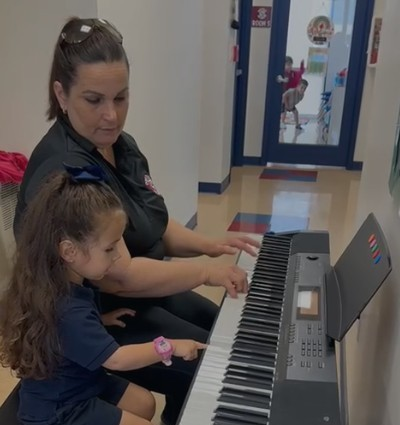

Over 30 years of experience transforming lives through music education and therapeutic support.

Graduated as a Professor of Piano in 1991, Tania has dedicated over three decades to music instruction for both children and adults. Her approach goes beyond sheet music: she seeks to foster creativity, expression, and self-confidence in every student.
Understanding the deep impact music has on the brain and emotions, Tania expanded her vocation. Today, she is a Registered Behavior Technician (RBT), specializing in integrating therapeutic strategies into her lessons.
This unique combination allows her to create a safe and adapted learning environment, using structured music activities to reduce challenging behaviors, improve communication, and support emotional regulation, especially for children with special needs.
Piano and voice lessons tailored to different learning paces. Creating interactive and hands-on lessons that keep students engaged and motivated.
Using singing, instruments, and rhythm to support emotional regulation, improve focus, and teach adaptive life skills.
Implementing behavior intervention plans. Experience in schools and centers (Miami Supreme, Hialeah Academy) reducing challenging behaviors in a positive environment.